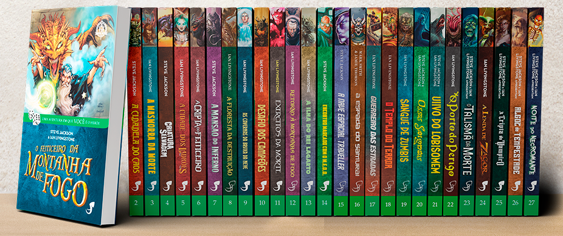
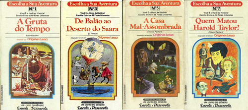

Livros-jogos - Você sabe o que é?
Livros-jogo (ou Aventuras Solo) são histórias onde os leitores participam ativamente do enredo fazendo escolhas que influenciam o curso da narrativa. São histórias que seu destino muda conforme sua decisão tomada. Você pode jogar várias vezes e descobrir vários caminhos e finais para sua aventura.
Esse tipo de história surgiu por volta de 1960 e se popularizaram em 1982 com o livro O Feiticeiro da Montanha de Fogo, primeiro livro da coleção Fighting Fantasy (Aventuras Fantásticas no Brasil). Quer conhecer mais sobre a coleção acesse o Instagram do Aventuras RPG Brasil onde a cada semana é disponibilizado uma sinopse de livros-jogos e também postagens com dicas, mapas e até alguns spoilers.

Outra coleção de sucesso é a "Escolha sua Aventura - Coleção Enrola e Desenrola" (Choose Your Own Adventure) com 36 livros traduzidos e publicados no Brasil.

Vale ressaltar também a Série "E Agora Você Decide" com seus 18 livros em português e muita diversão.

Mas a lista não para por aí pois existem uma infinidade de outros livros-jogos e cada uma tem seu assunto e propósito especifico. Outros Exemplos:
- Máquina do Tempo
- Lobo Solitário
- Mistérios de Sherlock Holmes
- As Aventuras dos Trapalhões
- Você é o Herói
- Aventuras na Terra Média
- Viver ou Morrer
- Tormenta
- Captive (história iterativa e ilustrada em quadrinhos)
- A cidade de Your Town (história iterativa e ilustrada em quadrinhos do velho oeste)
Se você gosta desse estilo de jogo poderá jogar e também compartilhar suas histórias com outras pessoas aqui no Aventuras RPG Brasil. Envie sua história para aventurasrpgbr@gmail.com e compartilharemos ela aqui no nosso portal.